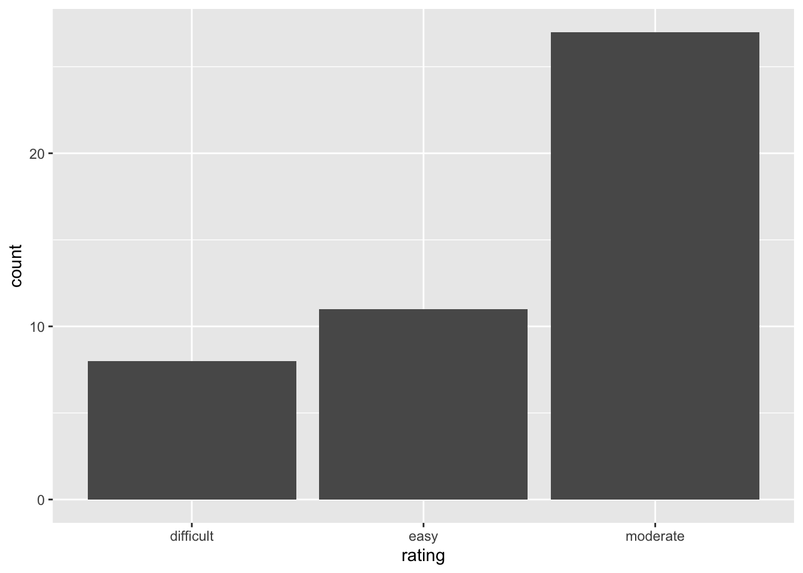
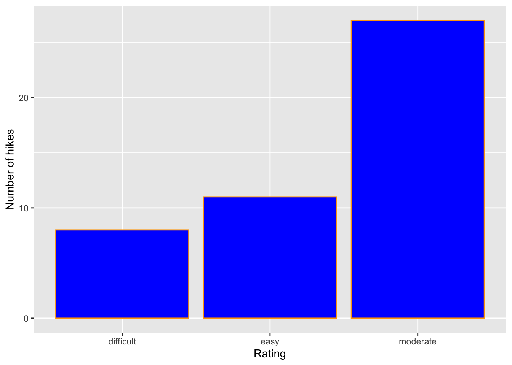
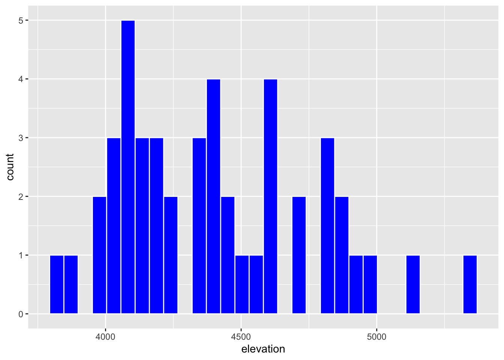
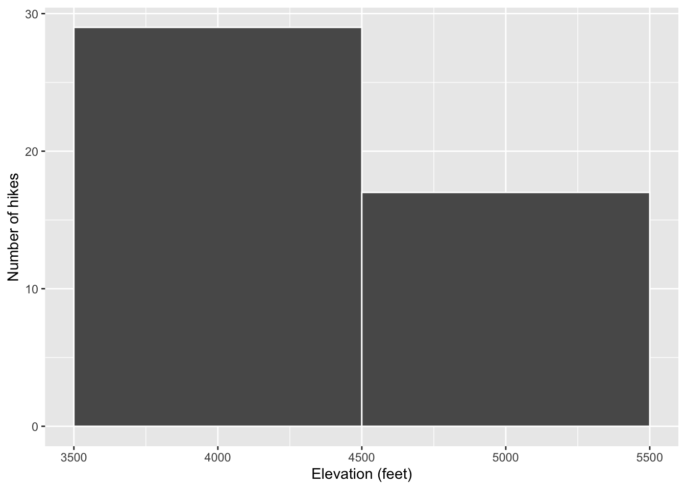
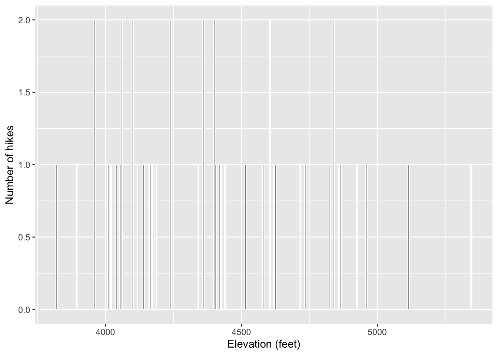
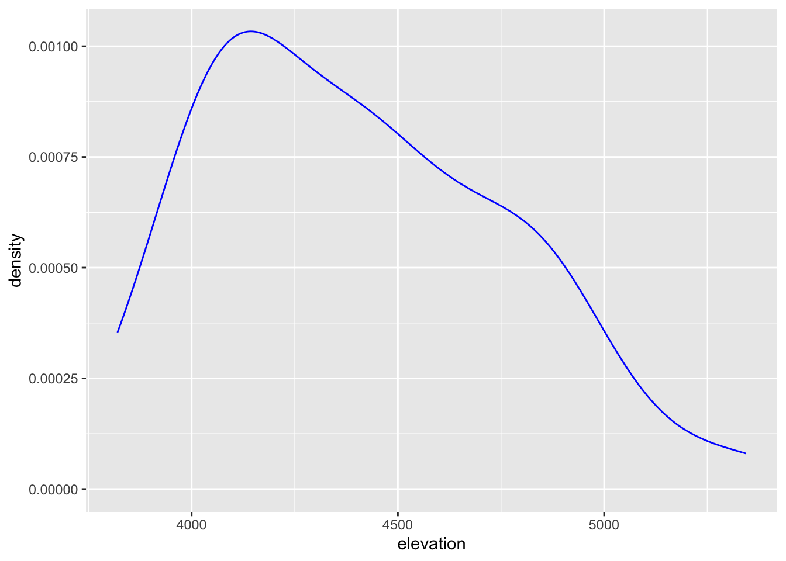
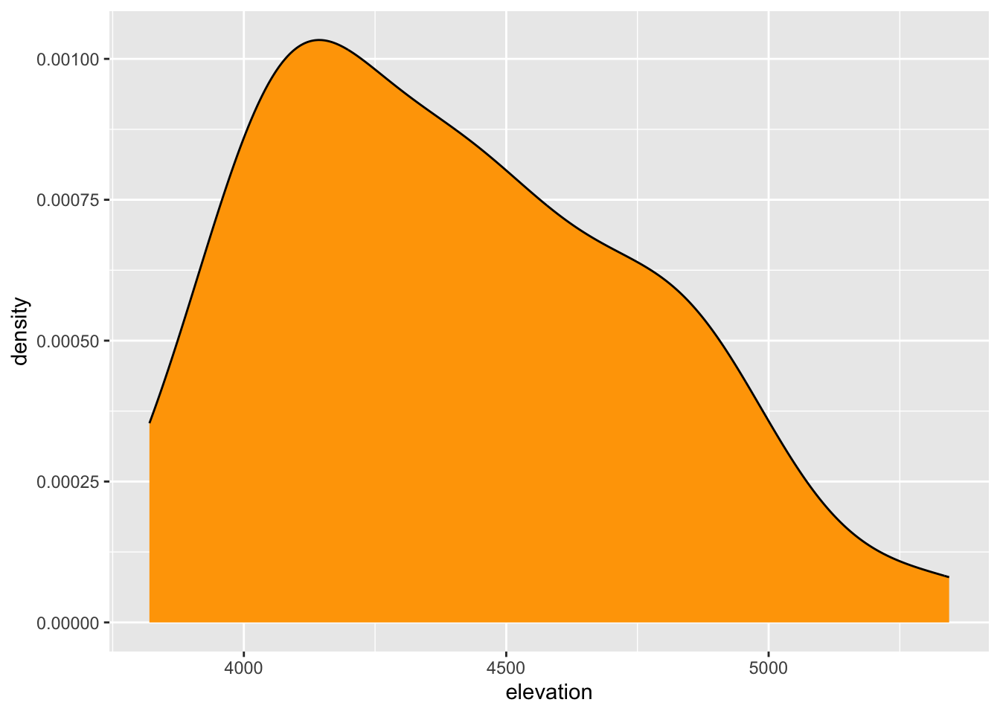
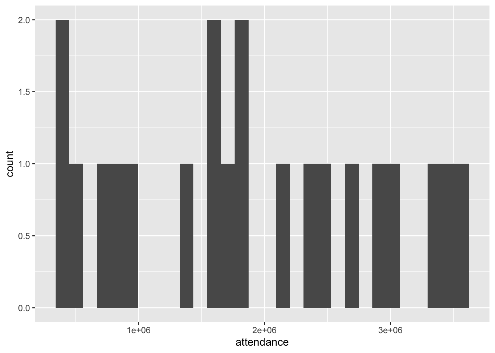
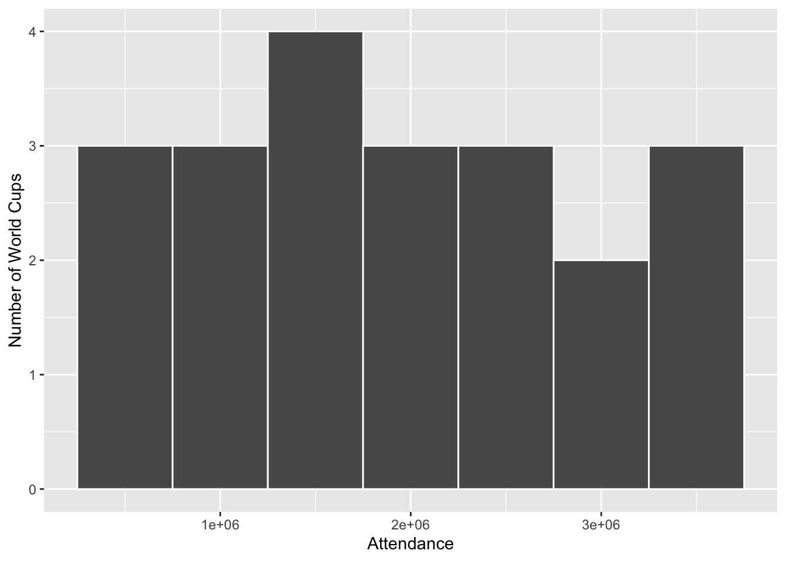
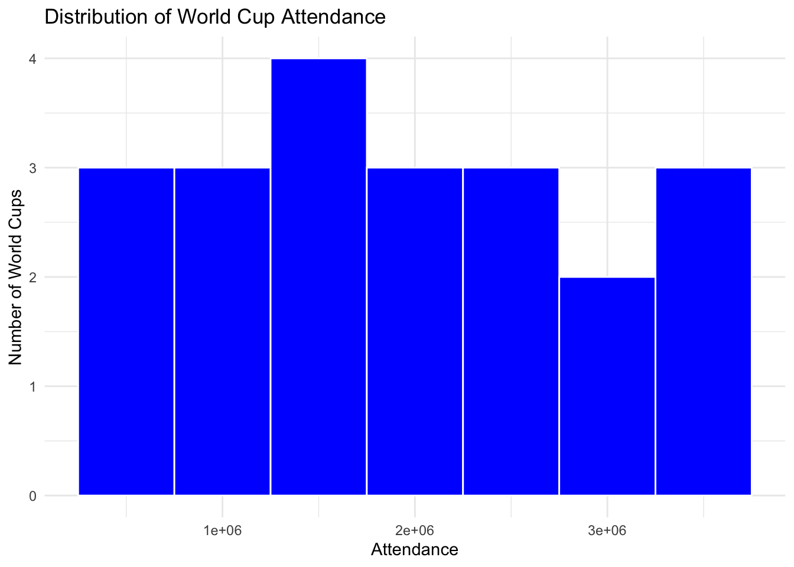

Univariate Viz — Exercises
Before starting, review the ICA Instructions ⭐ for details on pair programming and activity procedures.
Setup
Before solving any of the exercises, we need the following code chunks. Notice that code was placed into separate code chunks based on their purpose, which makes the document easy to read and interact with, eg, we can run each chunk independently from the other.
Exercise 1: Research Questions
Let’s dig into the hikes data, starting with the elevation and difficulty ratings of the hikes:
peak elevation difficulty ascent length time rating
1 Mt. Marcy 5344 5 3166 14.8 10.0 moderate
2 Algonquin Peak 5114 5 2936 9.6 9.0 moderate
3 Mt. Haystack 4960 7 3570 17.8 12.0 difficult
4 Mt. Skylight 4926 7 4265 17.9 15.0 difficult
5 Whiteface Mtn. 4867 4 2535 10.4 8.5 easy
6 Dix Mtn. 4857 5 2800 13.2 10.0 moderate- What features would we like a visualization of the categorical difficulty
ratingvariable to capture? - What about a visualization of the quantitative
elevationvariable?
- a: I would like the visualization to show the different difficulty categories and how many hiking trails fall into each category.
- b: I would like the visualization to show the typical elevation, the range of elevations, how the values are distributed, and whether there are any unusual values.
Exercise 2: Load tidyverse
We’ll address the above questions using ggplot tools. Try running the following chunk and simply take note of the error message – this is one you’ll get a lot!
In order to use ggplot tools, we have to first load the tidyverse package in which they live. We’ve installed the package but we need to tell R when we want to use it. Run the chunk below to load the library. You’ll need to do this within any .qmd file that uses ggplot().
Exercise 3: Bar Chart of Ratings - Part 1
Consider some specific research questions about the difficulty rating of the hikes:
- How many hikes fall into each category?
- Are the hikes evenly distributed among these categories, or are some more common than others?
All of these questions can be answered with: (1) a bar chart; of (2) the categorical data recorded in the rating column. First, set up the plotting frame:

Think about:
What did this do? What do you observe?
What, in general, is the first argument of the
ggplot()function?What is the purpose of writing
x = rating?What do you think
aesstands for?!?a: It created a plotting frame with the rating categories on the x-axis, but there are no bars yet.
b: The first argument tells ggplot which data set to use. In this sample, data set is hikes.
c: Put the rating variable on the x-axis.
d: Aesthetics.
Exercise 4: Bar Chart of Ratings - Part 2
Now let’s add a geometric layer to the frame / canvas, and start customizing the plot’s theme. To this end, try each chunk below, one by one. In each chunk, make a comment about how both the code and the corresponding plot both changed.
NOTE:
- Pay attention to the general code properties and structure, not memorization.
- Not all of these are “good” plots. We’re just exploring
ggplot.

Code
Code
Code

Exercise 5: Bar Chart Follow-up
Part a
Reflect on the ggplot() code.
What’s the purpose of the
+? When do we use it?We added the bars using
geom_bar()? Why “geom”?What does
labs()stand for?What’s the difference between
colorandfill?a1: This symbol is used to add another component to a ggplot.
a2: “Geom” is represent for geometric object. geom_bar() adds bars to the plot.
a3: Labs() stands for labels, it could used to change labels on the plot.
a4: Color changes the border color, and fill changes the inside color of bars.
Part b
In general, bar charts allow us to examine the following properties of a categorical variable:
observed categories: What categories did we observe?
variability between categories: Are observations evenly spread out among the categories, or are some categories more common than others?
We can learn that there are three categories of rating: easy, moderate, and difficult. The graph shows that the hikes are not equally distributed among these three levels. The number of moderate hikes is the highest, and the number of difficult hikes is the lowest.
We must then translate this information into the context of our analysis, here hikes in the Adirondacks. Summarize below what you learned from the bar chart, in context.
Part c
Is there anything you don’t like about this barplot? For example: check out the x-axis again.
I think the rating categories on the x-axis should be ordered from easy to difficult. This would make the graph clearer because people may naturally assume that the difficulty increases from left to right, and the current order could cause confusion.
Exercise 6: Sad Bar Chart
Let’s now consider some research questions related to the quantitative elevation variable:
- Among the hikes, what’s the range of elevation and how are the hikes distributed within this range (eg, evenly, in clumps, “normally”)?
- What’s a typical elevation?
- Are there any outliers, ie, hikes that have unusually high or low elevations?
Here:
- Construct a bar chart of the quantitative
elevationvariable. - Explain why this might not be an effective visualization for this and other quantitative variables. (What questions does / doesn’t it help answer?)
- This bar chart does not show the information clearly. There are too many elevation values to display on the graph, so it is difficult to see how these elevation values are distributed.It can show how many hikes have each specific elevation, but it does not clearly show the overall distribution, typical elevation, or possible outliers.
Exercise 7: A Histogram of Elevation
Quantitative variables require different viz than categorical variables. Especially when there are many possible outcomes of the quantitative variable. It’s typically insufficient to simply count up the number of times we’ve observed a particular outcome as the bar graph did above. It gives us a sense of ranges and typical outcomes, but not a good sense of how the observations are distributed across this range. We’ll explore two methods for graphing quantitative variables: histograms and density plots.
Histograms are constructed by (1) dividing up the observed range of the variable into ‘bins’ of equal width; and (2) counting up the number of cases that fall into each bin. Check out the example below:

Part a
Let’s dig into some details.
How many hikes have an elevation between 4500 and 4700 feet?
How many total hikes have an elevation of at least 5100 feet?
a1: There are 6 hikes with an elevation between 4500 and 4700 feet.
a2: There are 2 hikes with an elevation of at least 5100 feet.
Part b
Now the bigger picture. In general, histograms allow us to examine the following properties of a quantitative variable:
typical outcome: Where’s the center of the data points? What’s typical?
variability & range: How spread out are the outcomes? What are the max and min outcomes?
shape: How are values distributed along the observed range? Is the distribution symmetric, right-skewed, left-skewed, bi-modal, or uniform (flat)?
outliers: Are there any outliers, ie, outcomes that are unusually large/small?
b1: Most hikes have elevations in the 4000–4800 feet range.
b2: The elevations range from about 3700 to 5500 feet.
b3: The distribution is right-skewed, with most hikes concentrated at lower and middle elevations.
b4: There are a few unusually high elevation values above 5000 feet.
We must then translate this information into the context of our analysis, here hikes in the Adirondacks. Addressing each of the features in the above list, summarize below what you learned from the histogram, in context.
Exercise 8: Building Histograms - Part 1
2-MINUTE CHALLENGE: Thinking of the bar chart code, try to intuit what line you can tack on to the below frame of elevation to add a histogram layer. Don’t forget a +. If it doesn’t come to you within 2 minutes, no problem – all will be revealed in the next exercise.
Exercise 9: Building Histograms - Part 2
Let’s build some histograms. Try each chunk below, one by one. In each chunk, make a comment about how both the code and the corresponding plot both changed.
Code

Code
Code

Code
Code

Code


Exercise 10: Histogram Follow-up
What function added the histogram layer / geometry?
What’s the difference between
colorandfill?Why does adding
color = "white"improve the visualization?What did
binwidthdo?Why does the histogram become ineffective if the
binwidthis too big (eg, 1000 feet)?Why does the histogram become ineffective if the
binwidthis too small (eg, 5 feet)?geom_histogram () adds the histogram layer.Color changes the border color, while fill changes the inside color of the bars.Adding color = "white" makes the makes every bins more apparently.`Binwidth` controls the width of each bin in the histogram.Because when the `binwidth` is too big, that means there are more data in one bins, so it can't clearly see the distribution of data.When the `binwidth` is too small, the bins are too narrow, so there are too many bins and the graph becomes difficult to comprephend.
Exercise 11: Density Plots
Density plots are essentially smooth versions of the histogram. Instead of sorting observations into discrete bins, the “density” of observations is calculated across the entire range of outcomes. The greater the number of observations, the greater the density! The density is then scaled so that the area under the density curve always equals 1 and the area under any fraction of the curve represents the fraction of cases that lie in that range.
Check out a density plot of elevation. Notice that the y-axis (density) has no contextual interpretation – it’s a relative measure. The higher the density, the more common are elevations in that range.
Questions
-
INTUITION CHECK: Before tweaking the code and thinking back to
geom_bar()andgeom_histogram(), how do you anticipate the following code will change the plot?geom_density(color = "blue")geom_density(fill = "orange")
Before running the code, I thought that color = “blue” would turn the density curve blue, but I wasn’t sure which part of the graph would be filled with orange.
TRY IT! Test out those lines in the chunk below. Was your intuition correct?
My understanding of color = “blue” was correct, but my understanding of fill = “orange” was not. fill = “orange” means filling the area under the density curve with orange.



Examine the density plot. How does it compare to the histogram? What does it tell you about the typical elevation, variability / range in elevations, and shape of the distribution of elevations within this range?
The density plot shows the distribution of the data more clearly and continuously than the histogram. From the graph, we can see that most elevations are concentrated around 4000–4800 feet, with the highest point around 4100–4200 feet. The elevations range from about 3700 to 5400 feet. The distribution is right-skewed, with fewer hikes at higher elevations.
Exercise 12: Density Plots vs Histograms
The histogram and density plot both allow us to visualize the behavior of a quantitative variable: typical outcome, variability / range, shape, and outliers. What are the pros/cons of each? What do you like/not like about each?
A histogram helps us directly see how many hikes fall into each bin, so it is easier to understand the specific counts. However, the appearance of a histogram is affected by the binwidth, so we need to choose the binwidth carefully because it may influence how people interpret the data. In comparison, a density plot is smoother and more continuous, making it easier to see the overall distribution and where the data are concentrated. However, it does not directly show the specific number of hikes in each range. I prefer the histogram because it provides a more direct and precise view of the actual counts.
Exercise 13: Code = communication
We obviously won’t be done until we talk about communication. All code above has a similar general structure (where the details can change):
- Though not necessary to the code working, it’s common, good practice to indent or tab the lines of code after the first line (counterexample below). Why?
- Indenting the code makes the structure clearer and easier to read.
Code

- Though not necessary to the code working, it’s common, good practice to put a line break after each
+(counterexample below). Why? - It makes each layer of the code easier to see and read.
Exercise 14: Practice
Part a
Practice your viz skills to learn about some of the variables in one of the following datasets:
Code
year host winner second third fourth
1 1930 Uruguay Uruguay Argentina USA Yugoslavia
2 1934 Italy Italy Czechoslovakia Germany Austria
3 1938 France Italy Hungary Brazil Sweden
4 1950 Brazil Uruguay Brazil Sweden Spain
5 1954 Switzerland West Germany Hungary Austria Uruguay
6 1958 Sweden Brazil Sweden France West Germany
goals_scored teams games attendance
1 70 13 18 434000
2 70 16 17 395000
3 84 15 18 483000
4 88 13 22 1337000
5 140 16 26 943000
6 126 16 35 868000 [1] "year" "host" "winner" "second" "third"
[6] "fourth" "goals_scored" "teams" "games" "attendance" 
Code

Part b
Check out the RStudio Data Visualization cheat sheet to learn more features of ggplot.
Code

- I first added a title to make the purpose of the visualization clearer.
- I filled the bars with blue to change the appearance of the histogram.
- I used a minimal theme to make the visualization cleaner.
When done, don’t forgot to click Render Book and check the resulting HTML files. If happy, jump to GitHub Desktop and commit the changes with the message Finish uni viz and push to GitHub. Wait few seconds, then visit your portfolio website and make sure the changes are there.